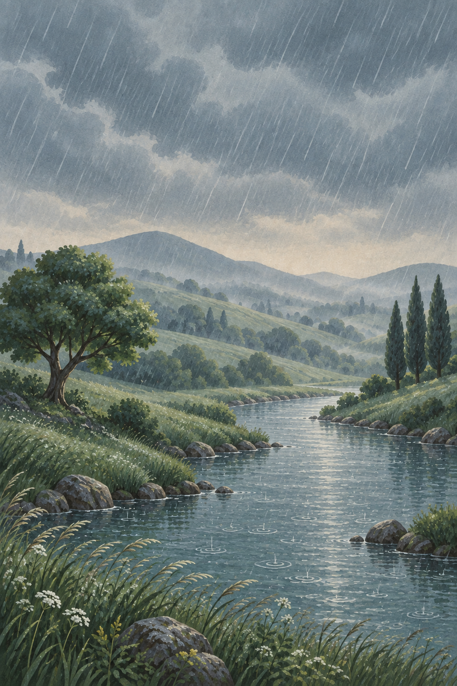
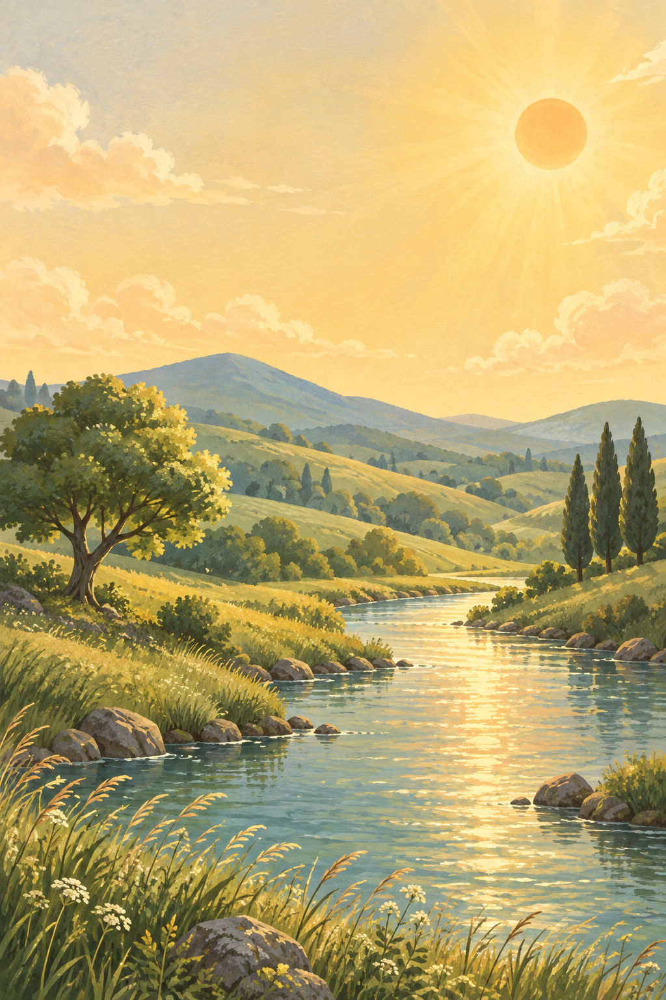
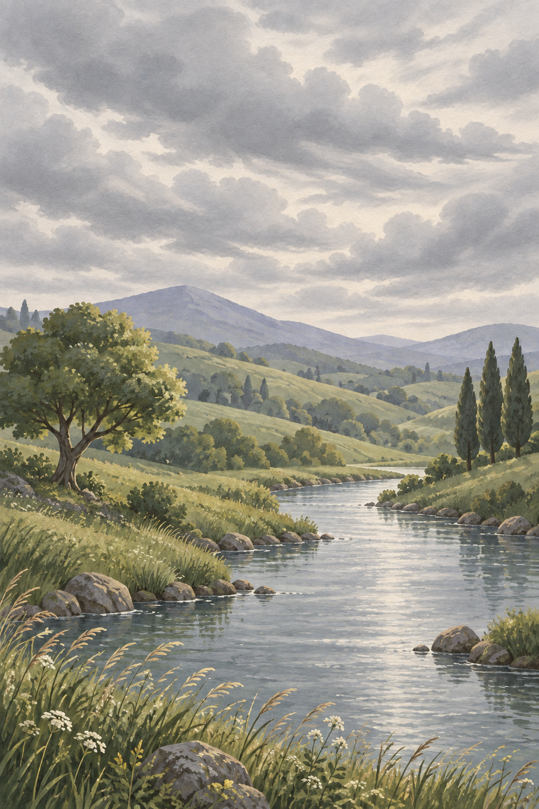
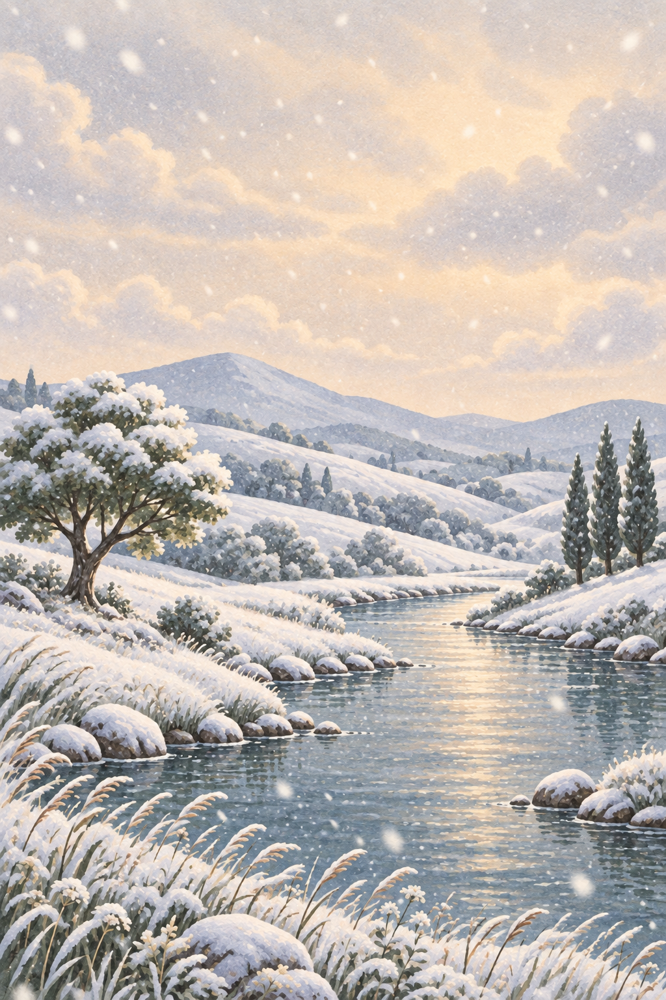

A landscape, four feelings.
The weather is the animation. A familiar river valley responds to shifting skies, painted in soft gouache with a little warmth in every season.
4 concept frames · 1024 × 1536 · Full-bleed mobile backgrounds
Reflective · sheltered · fresh
Slanted rain falls through depth; ripples widen on the river.
Download PNG ↗
Radiant · open · hopeful
Sunlight gently blooms; river highlights shimmer and grasses sway.
Download PNG ↗
Quiet · airy · contemplative
Broad cloud layers drift laterally at different speeds.
Download PNG ↗
Hushed · tender · weightless
Near and far flakes drift downward with a gentle sideways sway.
Download PNG ↗Use one registered landscape with separate sky, hills, trees and river layers. Ease the palette, cloud cover and sun glow over 3–5 seconds. These concept frames contain small geometry differences; align production layers before animating.
Keep wind direction continuous. Ramp particle emission over 2–4 seconds, let old drops or flakes leave naturally, and build snow cover slowly. Respect reduced motion with a short color dissolve.
| Condition | Mood | Palette (hex) | Motion | Why it fits |
|---|---|---|---|---|
| Rain | Reflective · sheltered · fresh | #718A98 · #AEC0BC · #526E67 · #D7CDB6 | Slanted rain falls through depth; ripples widen on the river. | Makes rainfall tangible while keeping the landscape comforting. |
| Sunny / clear | Radiant · open · hopeful | #F5DCA0 · #EBAA78 · #8EA77C · #526E67 | Sunlight gently blooms; river highlights shimmer and grasses sway. | Warm light makes clear weather feel alive. |
| Cloudy / overcast | Quiet · airy · contemplative | #CFD0CA · #A8B2B5 · #8F9E89 · #777F91 | Broad cloud layers drift laterally at different speeds. | Soft moving light gives overcast its own expressive character. |
| Snow | Hushed · tender · weightless | #EEE9DE · #BECBD3 · #8E9BB4 · #647B73 | Near and far flakes drift downward with a gentle sideways sway. | Depth and powder soften the familiar landscape into stillness. |